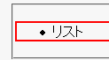
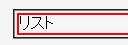
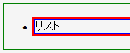

ul要素に対して width: 100%; などを指定してボックスの幅を表示領域の幅に近づけていくと、リストマークが画面外にはみ出てしまう。
<ul style="width:100%; border:2px solid red;"> <li>リスト</li> </ul>
Moz1.0.1での表示（標準モード）
WinIE6.0での表示（標準モード）
WinIEではリストマークをul要素のマージン部（ボーダーの外側）に表示させています。
<div style="border:2px solid green;"> <ul style="border:2px solid red;"> <li style="border:2px solid blue;">リスト</li> </ul> </div>
WinIE6.0での表示（標準モード）
このため、ul要素の幅を広げすぎるとマージン部が閲覧領域外に置かれてしまうため、リストマークが消えてしまいます。
なお、ul要素に左パディングを指定するとリストマークを表示させることができます。
<ul style="padding-left:40px; width:100%; border:2px solid red;"> <li>リスト</li> </ul>
WinIE6.0互換モード（WinIE5.5以前も含まれると思われます）ではWinIE6.0標準モードとは違う表示になりますが、この場合も左パディングを指定すればリストマーカーが表示されます。
WinIE6.0では標準・互換モードの両方で発生する現象です。